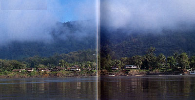

|
|
第６５ 自活
（大自然の中で軍の補給なしで生きて行く）
第１８軍（隷下部隊三個師団）は連合軍の敵に四囲を包囲されていました。にも拘らず、我々非戦闘員（軍の通信兵）には、
戦闘は全く関係がない様な平穏な毎日が続いていました。現地人はサコ椰子澱粉を採集し日本軍に提供し、我々はサゴ椰子澱粉
を色々に調理して食べ、自活していました。戦争とは一見変わった生活をしていました。
兵隊たちの話によると、『川の淵に何か大きな生き物がいる』という。川の淵の周辺はうっそうと茂った熱帯雨林で、深い川
の淵にいる生き物は亀ではないか？という話であった。その話を小耳に挟み、射撃の名人と自負していたので、よしッ！俺が銃
で撃ち止めてやろうと考えました。もしも、その亀を撃ち取ったら、私どもの１週間分の食肉にありつけると考えました。私が
誰よりも射撃が上手いことは皆んなが認めていました。そんな訳で、私はたった独りで、噂の川の淵で、藪に隠れて、午後の半
日を亀が出てくるのをじーっと待ちました。川の流れが澱んだ水の色は不気味な色をしていて、淵の周辺は誠に静かでした。不
気味なほど静かな時間が過ぎていくが何の変化も起きない。周囲が大部薄暗くなって来た。ジャングルの夜道とか薄暗いジャン
グル内の行動は、方向が分からなくなってしまい誠に危険である。目的地にたどり着けなくなることが多い。そんな訳で、甚だ
残念でしたが引き上げることにした。獲物を取りたい一心と、兵隊に食べさせてやりたい気持ちで、たった独りで、川の淵で、
午後の半日を頑張ったが徒労に終わりました。
蛇、トカゲ、蛙、……何でも見つけ次第捕らえて食べていました。決して美味しいものではない、食べないと栄養失調になる。
ただそれだけの事で、肉食しないと体にこたえることを体で悟りました。自活生活で最も不足したのは蛋白資源で、その点では蛇
は貴重な蛋白資源ですから、我々には有り難い動物でした。
川に泳いでいる魚を銃で撃つても、川底が岩盤であると魚は浮いてくるが、そうでないと徒労に終わる事も分かりました。
『銃で狩猟をしてはいけない』
という「師団命令」が出ていました。この命令を忠実に守る者は少なかった様に思う。餓死したのでは犬死になってしまう。と
にかく、生きていなければならないと、必死でした。

|